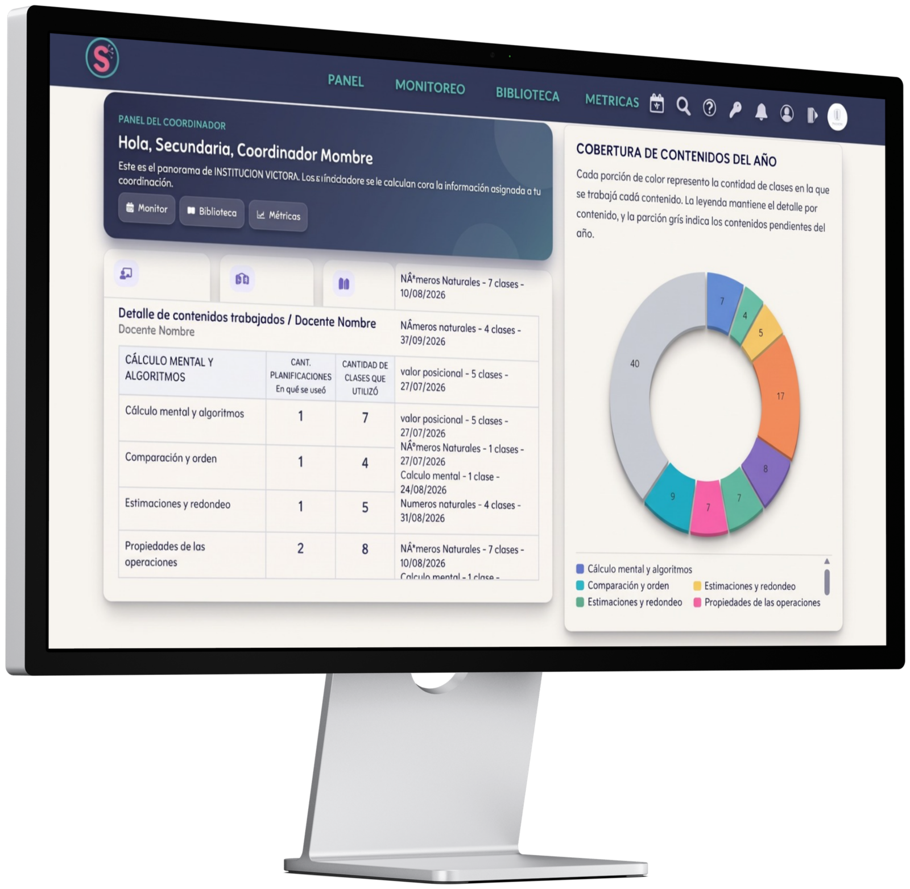

Carpetas, PDFs sueltos y borradores en el celular del docente. Sabium arma un único calendario institucional desde el Diseño Curricular Oficial de tu colegio, siempre actualizado.
Gestión pedagógica institucional
Cada aula, visible en tiempo real.
Sabium centraliza la planificación de tu institución: qué se enseña, cuándo y con qué avance, sin carpetas ni mensajes sueltos.
0documentos sueltos que perseguir
0%de la planificación en un mismo lugar
Realseguimiento del aula, no percepciones

Calendarización automática
Cada planificación se ubica sola en el día y el horario real de la clase, y se reacomoda ante cualquier imprevisto.
Visibilidad institucional
El directivo ve el estado de cada aula desde MONITOREO, sin tener que pedir que se lo cuenten.
Feedback con historial
Los comentarios quedan guardados junto a la clase, con su propio estado: aprobada, observada o rechazada.
¿Por qué elegir Sabium?
Cuatro problemas que ya no tenés que resolver a mano.
Reunimos en un solo lugar lo que hoy tu institución arma con carpetas, planillas sueltas y mensajes que se pierden.
01Planificación dispersa
02Seguimiento manual
03Feedback informal
04Decisiones a ciegas
Enterarte de lo que pasó en un aula ya no depende de preguntar. Filtrá por nivel, turno, curso o docente y mirá el estado de cada clase al instante.
Un comentario suelto se pierde. En Sabium, cada devolución queda guardada junto a la planificación, con estado propio: aprobada, observada o rechazada.
Elegir una estrategia sin datos es adivinar. Sabium muestra qué contenidos se trabajaron, con qué frecuencia y qué queda por cubrir.
¿Sabium es un costo más, o el resguardo de todo lo que tu institución ya construyó?
Comunidad educativa
Una plataforma, cuatro maneras de mirar la misma aula.
Directivos, coordinadores, docentes y familias parten de la misma información institucional, cada uno desde el lugar que necesita.
Directivos
ANTES
Se enteraban de un problema en una reunión, semanas después de que pasara.
CON SABIUM
Ven el estado de cada aula el mismo día, desde el panel de MONITOREO.
Coordinadores
ANTES
Las reuniones de equipo se armaban con impresiones sueltas, no con datos.
CON SABIUM
Llegan con métricas reales: qué se trabajó, qué falta y qué patrón se repite.
Docentes
ANTES
Planificaban una vez y volvían a hacerlo entero cuando algo se movía en el calendario.
CON SABIUM
Arrastran la clase a otro día y el resto de la calendarización se reacomoda sola.
Familias
ANTES
No tenían forma de saber si el colegio sostenía en el aula lo que prometía en la entrevista.
CON SABIUM
Forman parte de una institución que puede mostrar, con datos, la propuesta que sostiene.
Sabium lo construyó gente que coordinó áreas, ocupó cargos directivos y armó planificaciones un domingo a la noche. Por eso Sabium no le suma trabajo a la escuela: le devuelve el tiempo que la herramienta equivocada le quitaba.
Quiénes somos
Sabemos lo que implica dirigir un colegio, porque lo vivimos.
MA
Marina Alfie
- Licenciada en Sistemas de Información
- Profesora universitaria y de nivel medio
- Coordinadora del área de Matemática en nivel primario y secundario
BG
Blanca Goyenechea
- Licenciada en Ciencias de la Educación
- Diplomatura en Gestión Educativa
- Cargos directivos en escuelas primarias y secundarias
VL
Verónica Ludevid
- Profesora de Educación Preescolar
- Técnico Superior de Artes Plásticas y Diseño de Proyectos
- Coordinadora de nivel inicial
Imaginamos una institución educativa donde planificar no sea una carga y donde monitorear signifique acompañar, transformando el modo en que las escuelas planifican, evalúan y mejoran su práctica pedagógica.
La profesionalización de la gestión pedagógica no es un gasto: es el resguardo del activo más importante de un colegio, su propuesta educativa.
Hablemos
¿Hablamos de la gestión pedagógica en tu institución?
Necesitás más información. Completá el formulario y te contactamos a la brevedad, o escribinos directo por WhatsApp.
¿Querés ver Sabium en vivo?
Una reunión breve de 20 minutos, sin compromiso
Te mostramos en pantalla cómo Sabium ordena lo que hoy está disperso entre archivos, mensajes y memoria de cada docente.